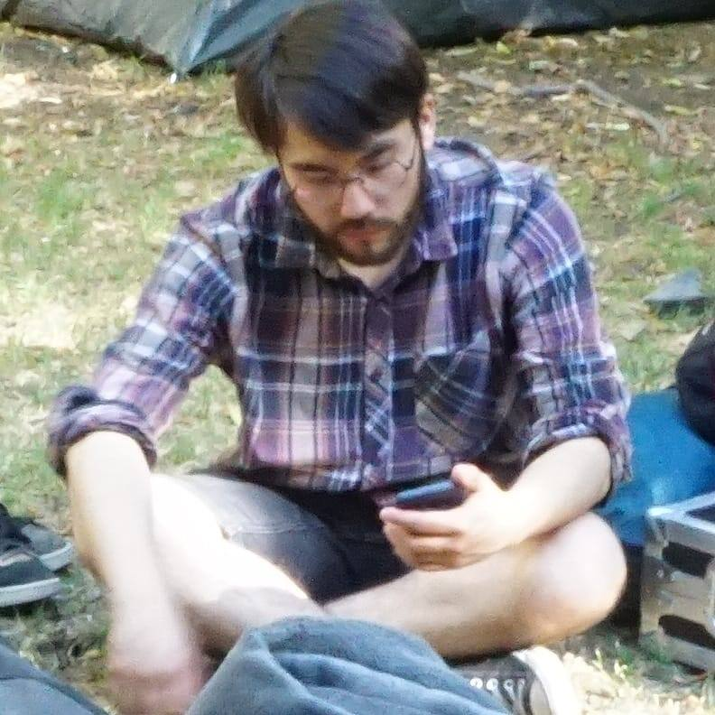

CURRICULUM VITAE

- Datos Personales:
- Nombre: Guillermo Antonio Palma Olea.
- Fecha de nacimiento: 21 de octubre de 1991.
- Edad: 30 años.
- Domicilio: Los Jazmines #10388, La Granja, Santiago de Chile.
- Rut: 17.681.850-6
- Teléfono Celular: +56986340743
- Email: gpalma.olea@gmail.com
- Formación Académica
- Enseñanza básica: Completa en Colegio Santo Domingo Savio.
- Enseñanza media: Completa, en Liceo Manuel Arriaran Barros, Don Bosco.
- Enseñanza superior: Incompleta, 6 semestres de Composición Musical en IP Arcos.
- Experiencia laboral:
- Composición de Música para videojuegos independientes. 2012
- Asistente de Visual en Falabella 2013-2014
- Vendedor integral/senior Audiomusica 2014 - 2019
- Vendedor part/time Audiomusica 2022 hasta el presente
Disponibilidad: Inmediata, Part Time

Portafolio